2026-10-31 · 코덱스 판단 · 화면은 2026-10-31 오전 기준
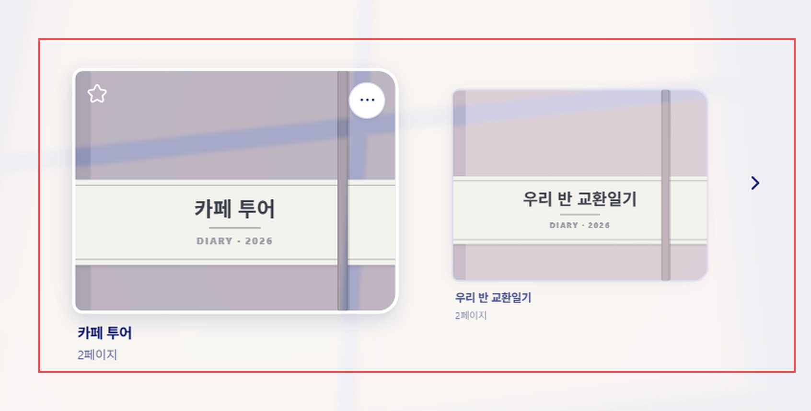
표지 카드보다 뒤의 큰 흐림 면과 그림자가 더 먼저 보이며, 사진부 아카이브보다 오래된 웹 캐러셀처럼 느껴집니다. 카드마다 대비와 크기가 달라 시선이 첫 카드에 안정적으로 머물지 못합니다.
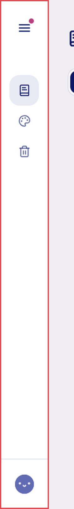
세 개의 아이콘이 세로로 멀리 흩어져 있어 기능 탐색보다 빈 여백이 강하게 보입니다. 화면 전체가 아카이브 도구가 아니라 데모용 사이드바처럼 느껴집니다.
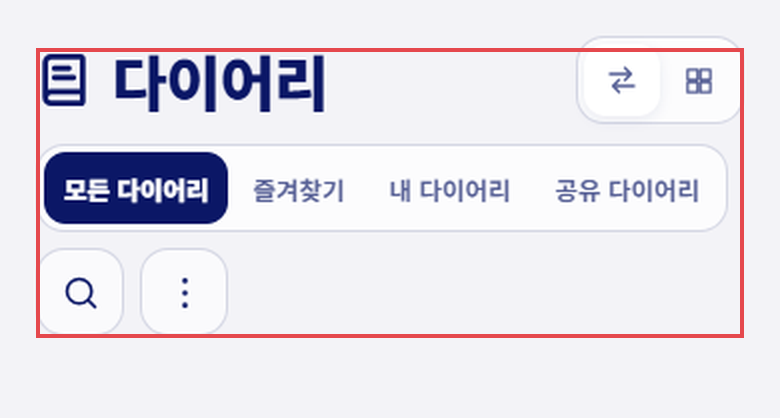
제목, 필터 탭, 보기 전환, 검색, 더보기 버튼이 다섯 덩어리로 나뉘어 첫 화면부터 복잡합니다. 특히 보기 전환은 제목과 멀고 검색·더보기는 한 줄 아래에 고립되어 있습니다.
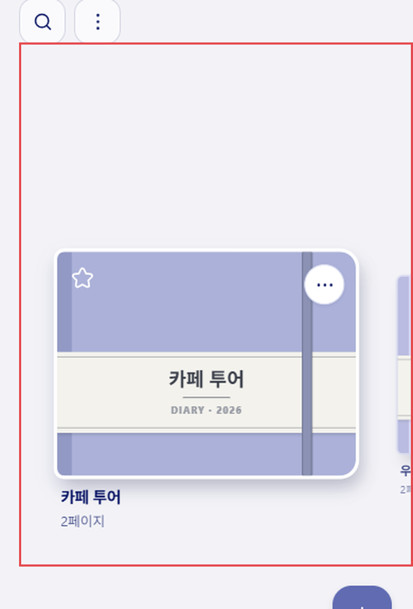
검색 행과 첫 다이어리 카드 사이가 약 190px 비어 있어 콘텐츠가 로딩되지 않은 화면처럼 보입니다. 카드가 화면 하단에 걸려 있어 첫 진입의 활기가 떨어집니다.
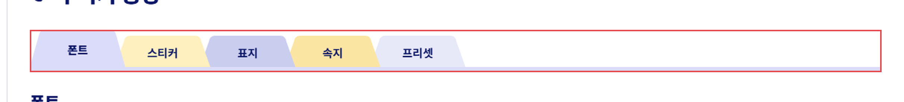
사다리꼴 탭마다 기울기와 높이가 달라 종이 견출지보다 오래된 브라우저 탭처럼 보입니다. 선택 상태도 색 면만 바뀌어 탭의 층위가 분명하지 않습니다.
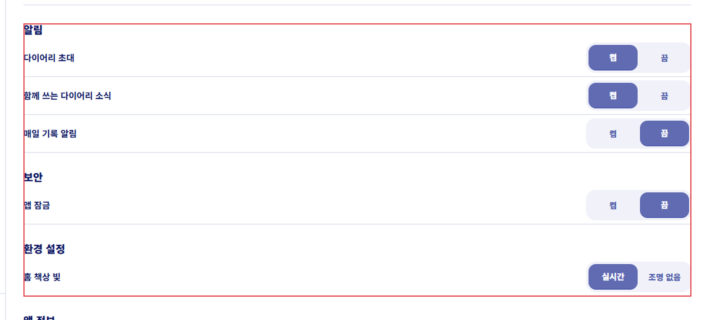
라벨은 왼쪽 끝, 제어기는 오른쪽 끝에 있어 한 행을 읽을 때 눈이 너무 멀리 이동합니다. 행마다 긴 구분선과 넓은 빈 면이 반복되어 섬세한 개인 설정 화면보다 관리 화면처럼 보입니다.
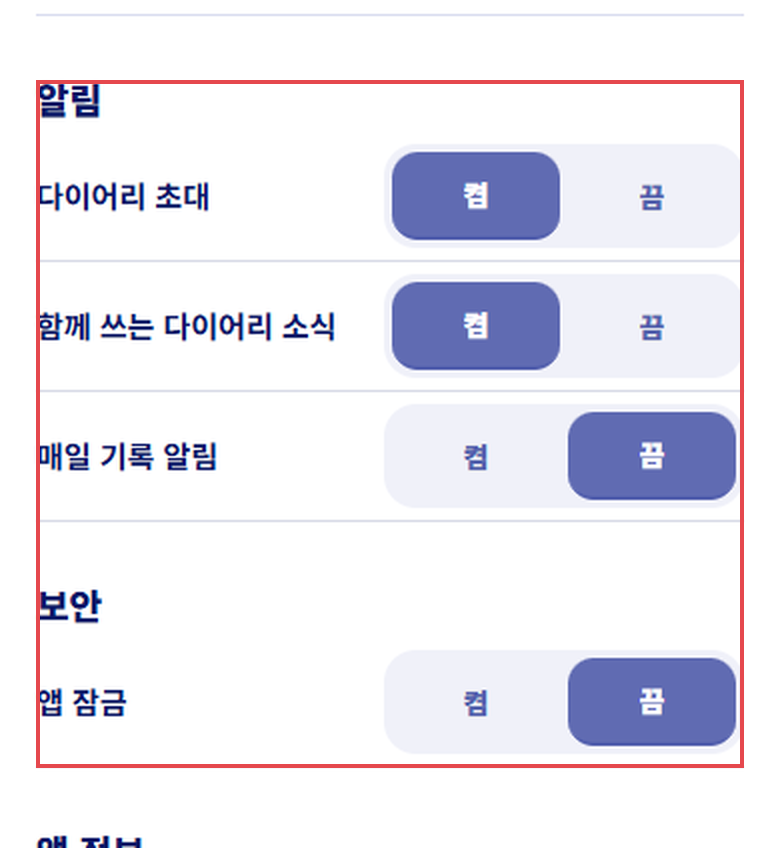
‘켬’과 ‘끔’을 각각 누르는 분할 버튼은 현재 상태와 바꿀 동작을 동시에 읽어야 해서 부담스럽습니다. 같은 모양의 버튼이 연달아 반복되어 설정 화면의 리듬도 둔해집니다.
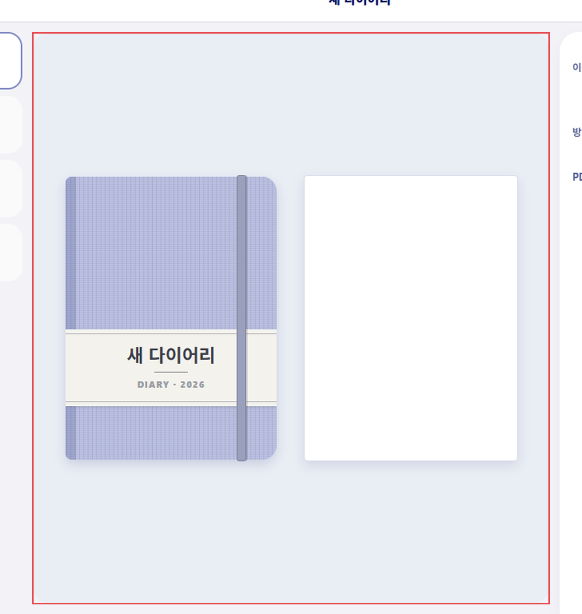
표지와 빈 속지가 큰 패널 중앙에 작게 떠 있어 실제 선택 작업보다 전시 공간처럼 보입니다. 오른쪽 설정 패널과 시각적으로 연결되지 않아 무엇을 바꾸는 화면인지 한 번에 읽히지 않습니다.
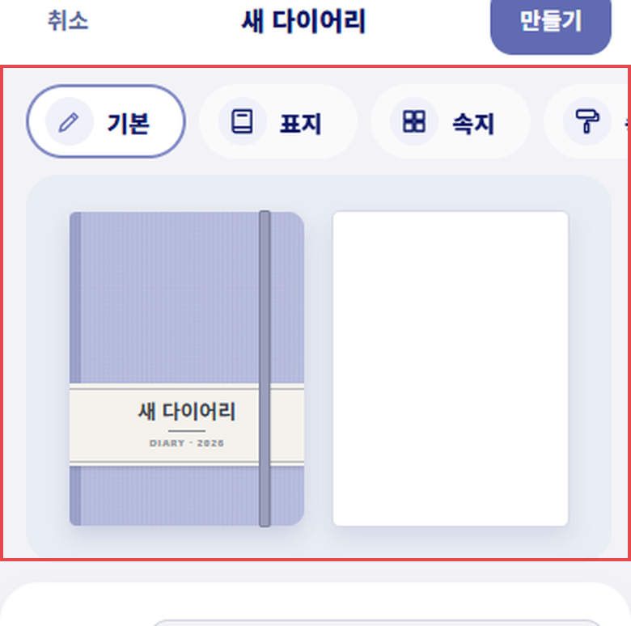
상단 카테고리의 마지막 항목이 잘리고, 표지·속지 미리보기도 가로 공간에 비해 어색하게 축소되어 있습니다. 첫 단계부터 화면이 넘쳐 보이면 만들기 과정이 급하게 느껴집니다.
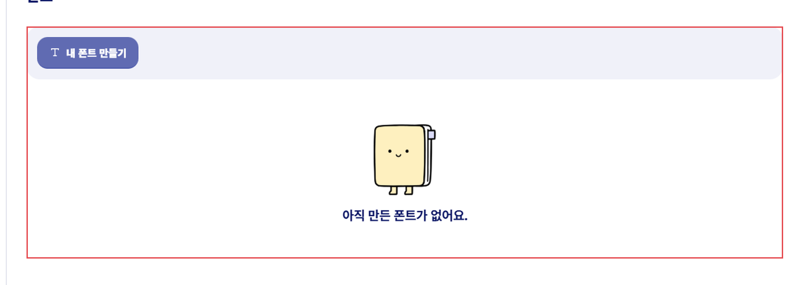
상단의 넓은 회색 생성 바와 중앙의 작은 캐릭터가 너무 멀리 떨어져 있어 하나의 빈 상태로 묶이지 않습니다. 사용자가 만든 자료가 없는 화면인데도 면적이 커서 비어 보이는 느낌이 과합니다.
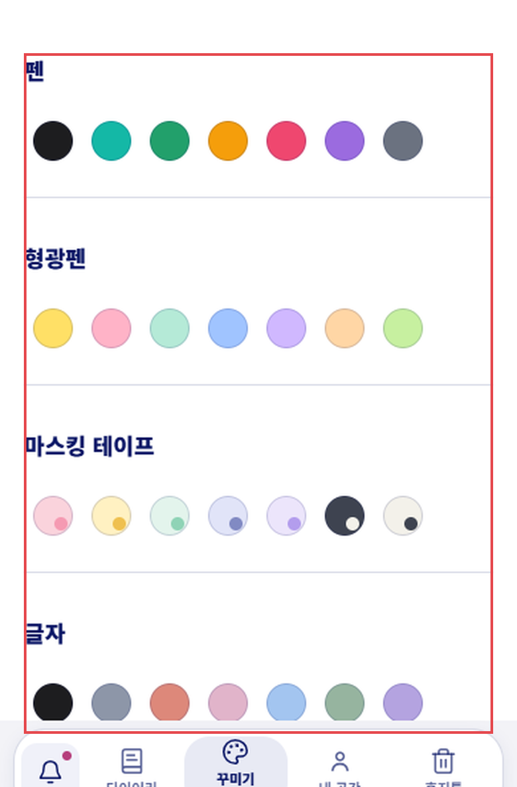
글자 색상 행이 하단 내비게이션에 가려져 마지막 선택지를 확인하기 어렵습니다. 프리셋 목록이 한 열로 길게 이어져 태블릿의 정돈된 2열 구조와도 인상이 크게 다릅니다.
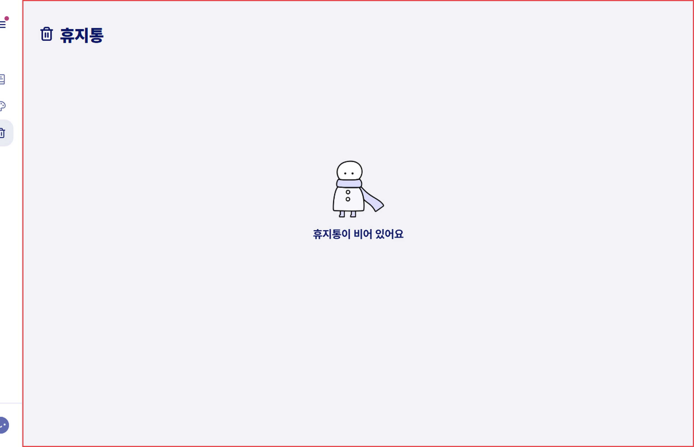
다른 공방·홈 화면과 달리 회색기가 강한 넓은 면이 화면을 차지해 비어 있는 상태가 더 차갑고 무겁게 느껴집니다. 작은 캐릭터와 제목의 대비도 약해 아카이브의 깨끗한 인상과 멀어집니다.
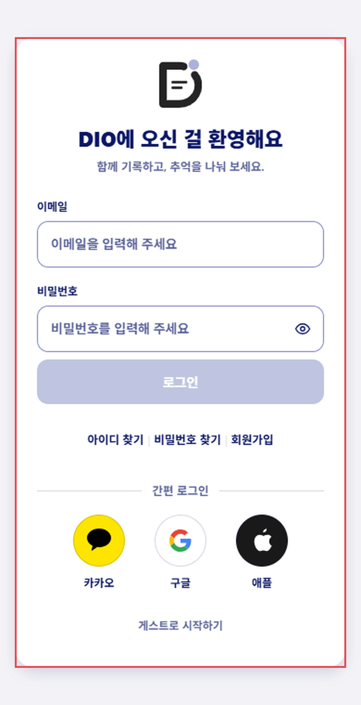
큰 흰 카드가 화면 위에 두껍게 떠 있어 사진부 기록 앱보다 금융·회원가입 폼처럼 보입니다. 카드 안의 긴 세로 여백까지 더해 첫 인상이 무겁습니다.
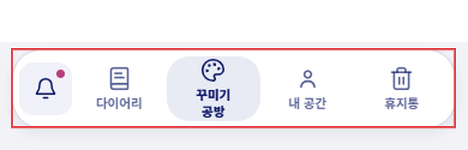
모든 화면에서 큰 흰 알약 바가 떠 있어 콘텐츠보다 하단 조작부가 먼저 보입니다. 선택 항목 배경도 넓어 공방의 섬세한 탭·색상보다 내비게이션이 더 무겁습니다.
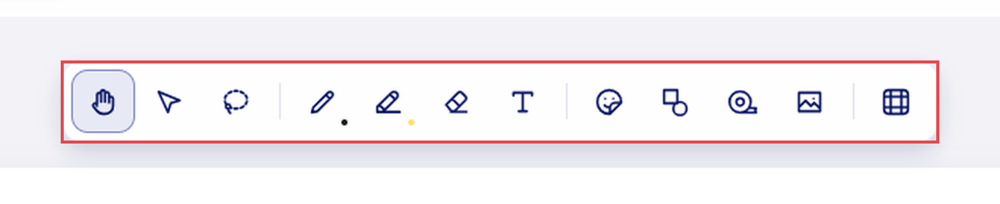
한 줄에 비슷한 선 아이콘이 12개 이상 붙어 있어 처음 보는 사용자는 도구를 빠르게 구분하기 어렵습니다. 구분선은 많지만 기능 군이 눈에 들어오지 않아 전문 편집기처럼 딱딱하게 느껴집니다.
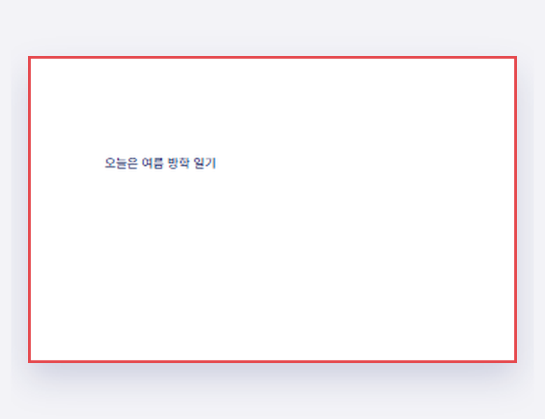
캔버스가 상단·하단 도구에 눌려 작은 가로 직사각형으로 남아 기록하는 공간보다 조작 장치가 더 커 보입니다. 특히 캔버스 위 텍스트가 너무 작아 다이어리 편집의 즐거움이 약해집니다.
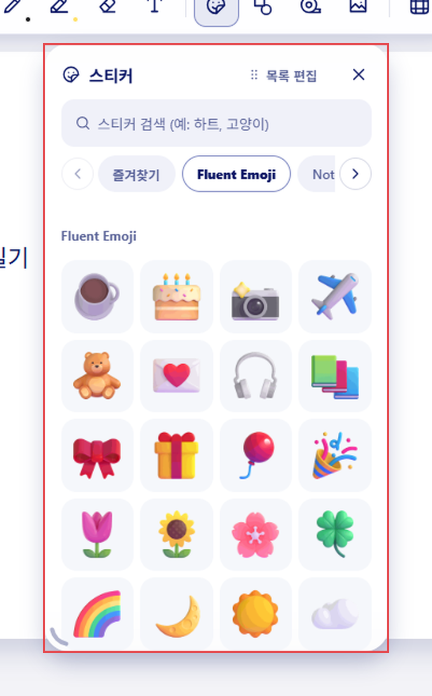
스티커 패널이 캔버스 한가운데를 길게 덮어 실제로 놓을 위치를 보며 고르기 어렵습니다. 도구막대에서 열었지만 화면 중앙에 뜨므로 도구와 결과의 연결도 약합니다.
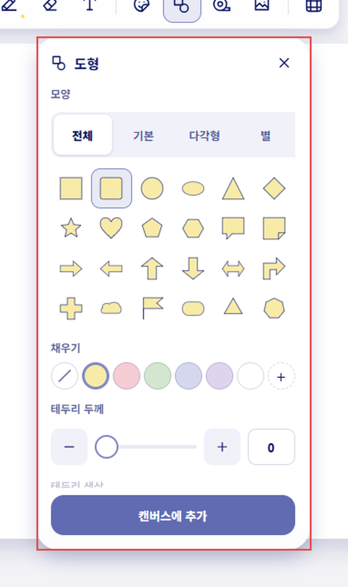
도형 24개, 색상, 테두리, 두께, 버튼이 좁은 패널에 한꺼번에 들어가 시선이 쉴 곳이 없습니다. 도형을 고르는 일보다 설정을 해석하는 일이 먼저 됩니다.
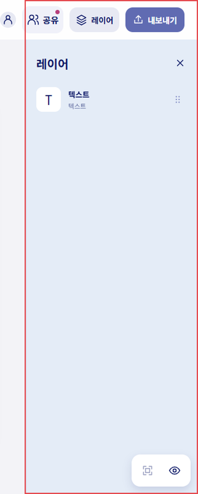
레이어가 하나뿐인데도 화면 오른쪽 282px 전체를 계속 차지해 캔버스가 좁아 보입니다. 패널의 큰 옅은 색 면은 작업 공간보다 사이드 패널을 강조합니다.
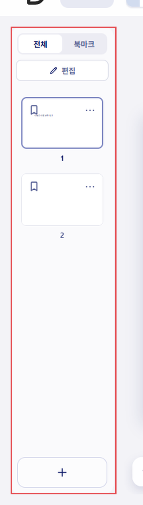
왼쪽 페이지 목록과 오른쪽 레이어 패널이 동시에 열린 상태에서 캔버스가 양쪽에서 밀립니다. 페이지 썸네일은 작고 빈 공간은 커서 목록을 펼친 효용도 낮습니다.
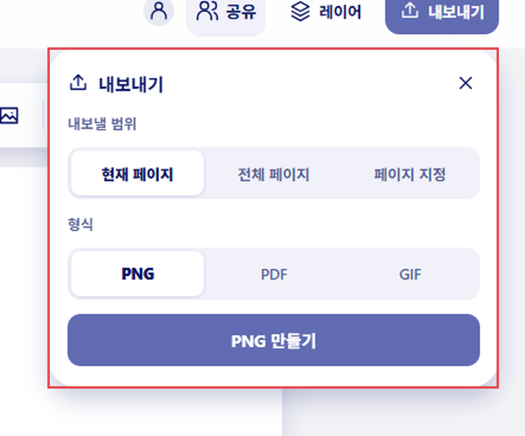
상단 버튼을 눌렀는데 큰 둥근 대화상자가 캔버스 위를 덮어 도구와의 맥락이 약합니다. 범위와 형식이 같은 시각적 무게로 나열되어 가장 중요한 선택이 빠르게 읽히지 않습니다.
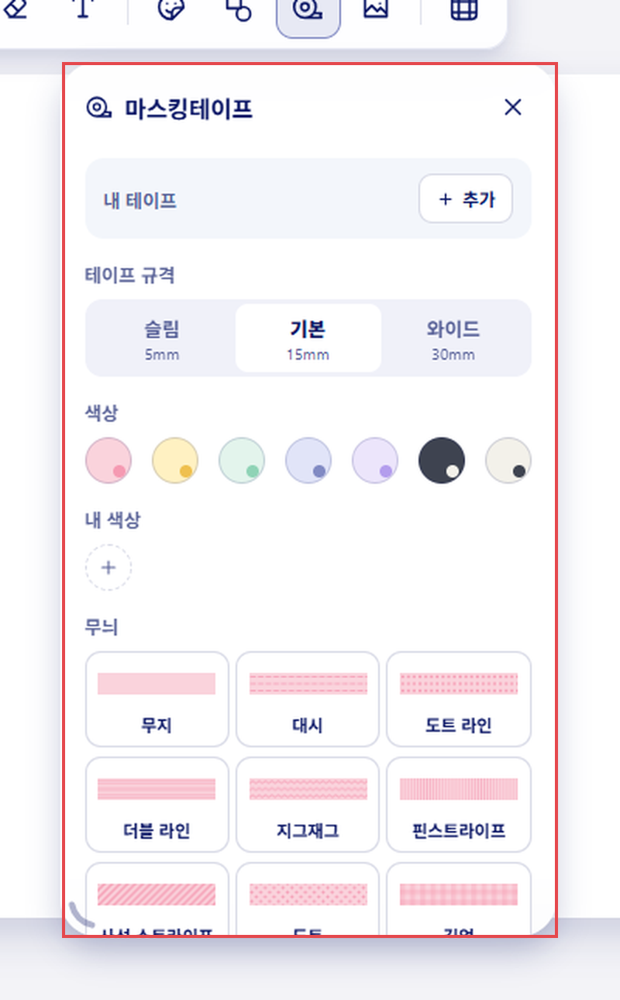
테이프 규격·색상·무늬를 한 화면에 모두 보여 주지만 무늬 썸네일이 작아 실제 선택의 차이가 잘 보이지 않습니다. 패널 하단도 잘려 있어 더 많은 항목이 있다는 불안정한 인상을 줍니다.
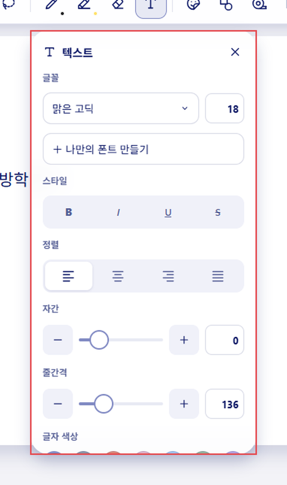
글꼴·스타일·정렬·자간·줄간격을 보여 준 뒤 핵심인 글자 색상이 하단에서 잘립니다. 사용자는 스크롤 가능한 패널인지, 설정이 누락된 것인지 즉시 알기 어렵습니다.
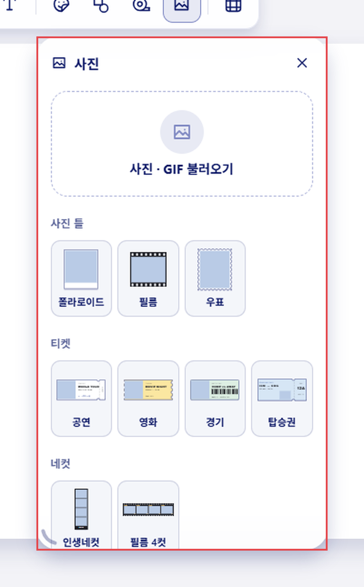
상단 업로드 상자는 크지만 아래의 사진 틀·티켓 선택지는 너무 작아 두 기능의 위계가 뒤집혀 보입니다. 사진을 고르는 도구인데 실제 결과물의 모양을 비교하기 어렵습니다.